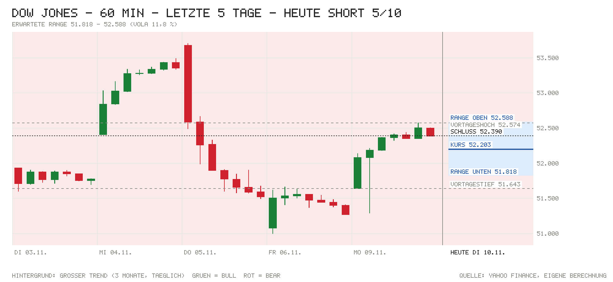

Tagesentscheidung ab 15:33 bis 22:00 Uhr
Die Oktober-Inflation lag über der Prognose (CPI +0,4 %, Kern +0,3 %, je 0,1 Punkte zu hoch). Die US-Renditen steigen kräftig (10J 4,97 %, +11 Bp.), und eine Fed-Erhöhung im Dezember ist jetzt voll eingepreist. Im Dow kommt hinzu, dass Caterpillar nach dem Plus von gestern rund 3,7 % abgibt (−136 Pkt.); alle 30 Werte zusammen liegen bei −137 Pkt. Gegenargumente: Der Ölpreis fällt weiter, Europa ist fest, und der Dow hält sich seit der Eröffnung stabil knapp über dem 21- und 50-Tage-Schnitt.
- Kurs um 15:33
- 52.203
- Erwartete Range
- 51.818 – 52.588
- Eingepreist (Tagesoption)
- ±0,74 %
Einschätzung vom Kurs um 15:33 bis zum US-Schluss. Range = ±1 σ für die restliche Handelszeit aus der S&P-500-Tagesoption, auf den Dow umgerechnet (ca. 68 %). Keine Anlageberatung.
Chart

Signale
| Signal | Wirkung | Stand und Einordnung |
|---|---|---|
| Eröffnung & erste Minuten | Gegenwind | Eröffnung 52.163 (Lücke −0,43 %), jetzt 52.203 (+0,08 % seit Eröffnung), Hoch/Tief bisher 52.259/52.087. Die Lücke wird nicht zurückgekauft. |
| Schwergewichte heute | Gegenwind | Alle 30 Werte zusammen −137 Pkt. Caterpillar allein −136, dazu Nvidia (−43) und Chevron (−28). Stützen: Travelers (+27), Goldman Sachs (+22). |
| US-Daten heute | Gegenwind | CPI +0,4 % vs. Prognose 0,3 %, Kern-CPI +0,3 % vs. 0,2 %. NFIB 97,8 (Prognose 98,0). |
| Europa & Asien | Rückenwind | DAX +1,00 %, Euro Stoxx 50 +1,01 %. Über Nacht Nikkei +2,87 %, Shanghai +0,08 %, Hang Seng +0,44 %. |
| Zinserwartung | Gegenwind | Fed am 9.12.: 113 % für +25 Bp. (impl. 4,16 %), also voll eingepreist mit Restwette auf mehr. Januar weitere 53 %. |
| Renditen | Gegenwind | US 2J 4,71 % (offiziell gestern 4,56 %), 10J 4,97 % (+11 Bp. zum Vortagesschluss 4,86 %). |
| Kreditstress | Gegenwind | FRED n/v. Ersatz: HYG −0,35 %, LQD −0,74 %. Vor allem zinsgetrieben, kein akuter Kreditstress. |
| Öl & Dollar | Rückenwind | WTI 84,48 USD (−2,73 %), Brent 89,67 USD (−3,13 %), erstmals unter 90. EUR/USD 1,1189 (+0,38 %). |
| Trend | Gegenwind | 52.203 knapp über dem 21-Tage-Schnitt (52.161) und dem 50-Tage-Schnitt (52.041), über dem 200-Tage-Schnitt (50.693). Großer Trend: Bear seit 28.10. |
| Positionierung | Neutral | COT 3.11.: Hedgefonds im S&P-Future netto −372.318 (+28.286). Keine Extremlage. |
| Unternehmensnachrichten | Gegenwind | Caterpillar gibt nach +7,2 % gestern wieder ab (vorbörslich −4,2 %). Nvidia −3,9 %: Untersuchung um CEO Jensen Huang belastet weiter. |
| Profi-Sicht | Gegenwind | ING: Die heiße Inflation stärkt den Fall für eine Fed-Erhöhung im Dezember. |
| Termine im Fenster | Neutral | Fed-Reden Logan (15:35), Schmid (19:30), Bowman (21:30). Kein Fed-Entscheid, keine Quartalszahlen von Dow-Werten. |
Dow-Werte heute
| Aktie | Heute | Beitrag |
|---|---|---|
| Caterpillar | −3,73 % | −136 Pkt. |
| Nvidia | −3,94 % | −43 Pkt. |
| Chevron | −2,17 % | −28 Pkt. |
| Travelers | +1,13 % | +27 Pkt. |
| Microsoft | −0,71 % | −24 Pkt. |
| Goldman Sachs | +0,39 % | +22 Pkt. |
| Salesforce | −1,34 % | −18 Pkt. |
| UnitedHealth | +0,75 % | +18 Pkt. |
| Summe aller 30 Werte | −137 Pkt. |
Beitrag = Kursänderung seit gestern ÷ Dow-Divisor (aus den Kursen berechnet, 0,1636). Laufende Kurse von Yahoo, bis zu 15 Minuten verzögert. Die Dow-Liste im Skript hat den Stand Nov. 2024.
Großer Trend (3-Monats-Momentum)
- Stand
- Bear
- Seit
- 28.10. (5 Wechsel in 3 Monaten)
- Schluss 09.11.
- −2,61 % vs. Zins +0,98 %
- Heute dreht es bei Schluss über
- 54.299 (jetzt −3,74 %)
Auch mit dem Kurs von jetzt bliebe das Signal Bear. Bull = Rendite der letzten 3 Monate über dem Geldmarktzins, Bear = darunter. Regel: Rendite der letzten 63 Handelstage (≈ 3 Monate) gegen die 13-Wochen-T-Bill (^IRX, jetzt 4,12 %), jeden Tag zum Schluss neu entschieden, Zeitrahmen Tageskerzen (nach Antonacci 2014, dort monatlich über 12 Monate; täglich entschieden dreht es öfter falsch). Keine Anlageberatung.
Bilanz der letzten Entscheidung
9.11.: Long mit 5/10 ab 51.852. Die Richtung war richtig: Schluss 52.390, +538 Punkte (Hoch 52.574). Die Range von ±437 wurde nach oben verfehlt. Gesamt seit Start: 3 Einschätzungen, Richtung 67 % richtig, Summe −1.029 Punkte bis Schluss. Range bisher an 0 von 3 Tagen getroffen (Soll ca. 68 %).
Marktlage
| Markt | Stand | Veränderung |
|---|---|---|
| Dow Jones (Schluss 9.11.) | 52.389,75 | +2,15 % |
| Dow (Eröffnung heute) | 52.163,21 | −0,43 % |
| Dow (jetzt, Kurs zur Notiz 15:33) | 52.203 | −0,36 % |
| S&P 500 | 7.495,08 | −0,73 % |
| Nasdaq 100 | 27.597,87 | −1,11 % |
| US-Futures (S&P / Nasdaq) | 7.526,00 / 27.708,00 | −0,64 % / −1,09 % |
| DAX (aktuell) | 26.528,75 | +1,00 % |
| Euro Stoxx 50 (aktuell) | 6.353,82 | +1,01 % |
| EUR/USD | 1,1189 | +0,38 % |
| WTI (USD/Barrel) | 84,48 | −2,73 % |
| Brent (USD/Barrel) | 89,67 | −3,13 % |
| Gold (USD/Unze) | 4.064,80 | −1,21 % |
| VIX | 21,05 | +5,67 % |
| VXD (Schluss 9.11.) | 17,42 | −19,16 % |
Stände von 15:34 Uhr (Yahoo, bis 15 Min. verzögert). Fallendes Öl und ein fallender VXD sind grün markiert, ein steigender VIX rot. Dow-Veränderung am 9.11. laut Trading Economics.
Anleihen & Zinsen
| Kennzahl | Stand | Veränderung |
|---|---|---|
| US-Treasury 2J (live) | 4,71 % | +15 Bp. (vs. offiziell 4,56 % am 9.11.) |
| US-Treasury 10J (live) | 4,97 % | +11 Bp. |
| Fed nächste Sitzung (9.12.) | 113 % für +25 Bp. (impl. 4,16 %) | Erhöhung voll eingepreist |
| Fed-Zielband | 3,75–4,00 % (EFFR 3,88 %) | zuletzt +25 Bp. am 17.9. |
| US-Hochzins (HYG, Ersatz) | 77,24 USD | −0,35 % heute |
| Investment Grade (LQD, Ersatz) | 103,90 USD | −0,74 % heute |
Die Risikoaufschläge von FRED lagen nicht vor, daher die Anleihe-ETFs HYG und LQD als Ersatz (nur Tagesveränderung, Wochenwert n/v). US-Kurve live von CNBC. Offizielle 10J vor einer Woche: 4,91 %.
Termine heute (deutsche Zeit)
- 12:00 USA: NFIB-Mittelstandsoptimismus – Ist 97,8 vs. Prognose 98,0
- 14:30 USA: Verbraucherpreise Oktober – Ist +0,4 % vs. Prognose +0,3 % (zuvor +0,6 %)
- 14:30 USA: Kern-Verbraucherpreise – Ist +0,3 % vs. Prognose +0,2 % (zuvor +0,3 %)
- 15:30 Eröffnung der Wall Street
- 15:35 Fed: Rede Lorie Logan (Dallas)
- 17:45 EZB: Rede Philip Lane
- 19:30 Fed: Rede Jeffrey Schmid (Kansas City)
- 21:30 Fed: Rede Michelle Bowman
- 22:00 US-Börsenschluss. Keine Quartalszahlen von Dow-Werten heute; Cisco am 12.11. nach Börsenschluss (EPS-Prognose 1,15 USD).
Nachrichten zu Dow-Werten
- Caterpillar: −3,7 % (−136 Pkt.), vorbörslich bereits −4,2 %, nach einem Plus von 7,2 % gestern. Eine eigene Meldung für heute fand sich nicht. Einschätzung (ohne Quelle): Gegenbewegung nach der Erholung; mit dem höchsten Kurs im Index bestimmt die Aktie den Dow-Tag.
- Nvidia: −3,9 % (−43 Pkt.). Der Verwaltungsrat prüft, ob CEO Jensen Huang Ziel einer ausländischen Geheimdienstoperation war. Dazu verlieren Chipwerte nach der heißen Inflation (Marvell −5 %, Intel und Micron −3 % laut CNBC). Einschätzung: negativ, Technologie bleibt unter Druck.
- Chevron: −2,2 % (−28 Pkt.) mit dem Ölpreis, Brent erstmals seit Wochen unter 90 USD. Einschätzung: belastet den Dow leicht, entlastet aber die Inflationssorgen.
- Travelers, Goldman Sachs, UnitedHealth: zusammen +67 Pkt., Banken und Versicherer profitieren von höheren Zinsen. Einschätzung (ohne Quelle): eine Stütze, die den Index stabiler hält als den Nasdaq.
Profi-Sicht & Positionierung
- ING THINK: Laut „Hotter US inflation strengthens the case for a December Fed hike“ ist die Dezember-Erhöhung um 25 Bp. jetzt voll eingepreist, das entspricht der ING-Prognose; 2027 erwartet ING keine weiteren Schritte. Sinkende Benzinpreise könnten die November-Inflation drücken und die Fed bei 25 Bp. halten.
- Positionierung (COT, Stand 3.11.): Hedgefonds im S&P-Future netto −372.318 Kontrakte (+28.286), Vermögensverwalter netto +928.584. In der 10-jährigen Treasury Hedgefonds netto −2,26 Mio. Kontrakte (−35.035).
Quellen
- Marktdaten (Skript
marktdaten.mjs): Yahoo Finance (Kurse, Dow-Werte, VXD, ^IRX), Nasdaq (Kalender, Optionskette SPY), CNBC (US-Kurve), Bundesbank, U.S. Treasury, Fed-Pfad über Amber Terminal, CFTC (COT), ING THINK - CNBC: Stocks fall after higher-than-expected CPI report, tech comes under pressure again
- Trading Economics: US Stocks Dip Amid Hot Inflation and Chipmaker Weakness
- Chartmill: S&P 500 Premarket Losers: GEV, CAT, VRT Fall After Yesterday's Gains
- Reuters/MarketScreener: Nasdaq futures slip with Nvidia woes
- ING THINK: Hotter US inflation strengthens the case for a December Fed hike